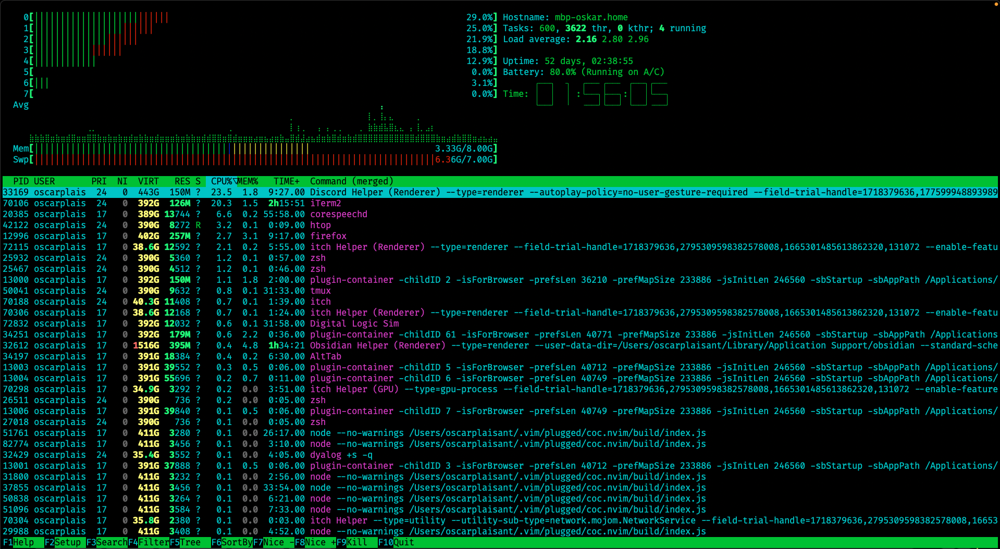
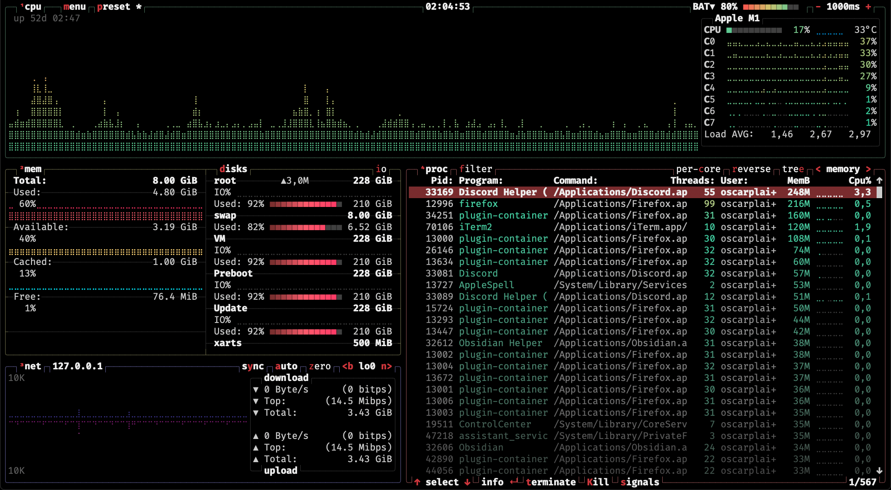
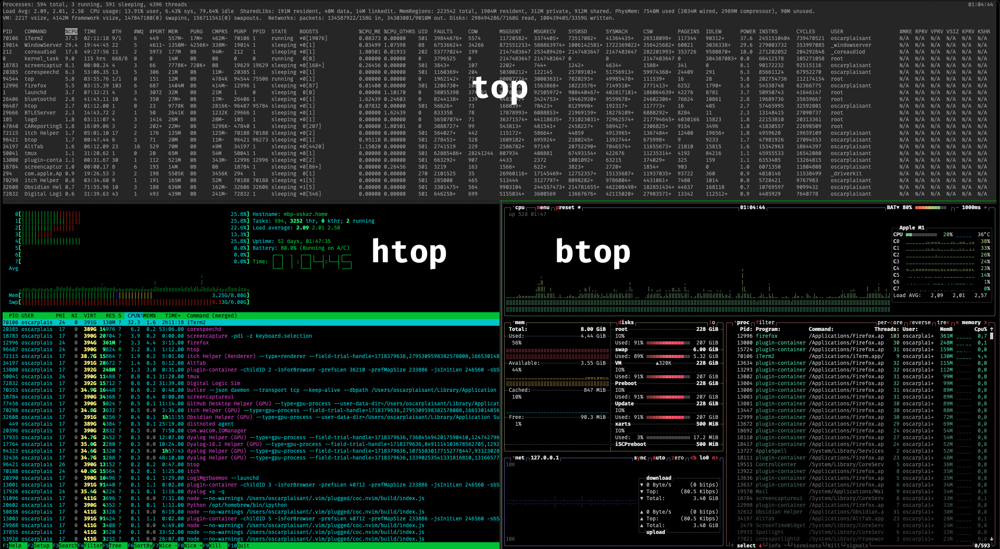

btop est un utilitaire pour visualiser les processus actifs sur votre ordinateur, et les statistiques comme la quantité d’entrée/sortie en mémoire ou réseau.
Dépôt github de btop : aristocratos/btop
Pourquoi btop ?
Il existe de nombreuses alternatives à btop. Il est lui-même dérivé de bashtop et bpytop.
L’outil similaire le plus connu est certainement top, qui permet d’afficher la liste des processus en cours sur votre machine, ainsi que des statistiques sur la charge du processeur ou de la mémoire. top à l’avantage d’être présent sur presque toutes les machines Linux.
Ceci dit, top est très simple dans son interface, et très peu intuitif.
htop
Un autre utilitaire très connu est htop, qui est une version plus jolie et utilisable de top, qui permet de chercher et filtrer les processus selon leur nom.
htop est beaucoup plus agréable à utiliser que top, avec des raccourcis plus intuitifs, des boutons cliquables (oui, c’est possible sur un terminal), et une interface plus agréable.
Voici à quoi ressemble htop :

btop
btop est un autre utilitaire du même type, mais il a quelques avantages :
- il est plus intuitif
- les raccourcis clavier sont affichés
- le menu d’options est bien fait (plus simple à utiliser que celui de
htop)
- il est plus joli
- il permet de voir plus de statistiques

Les raccourcis claviers sont montrés par la lettre en rouge dans leur nom (comme m pour aller dans le menu), et chaque fenêtre peut être affichée/masquée en appuyant sur le chiffre qui lui correspond (de 1 à 4).
Comparaison
Voici une comparaison des interfaces des 3 outils dont j’ai parlé : top, htop et btop

Installer btop
btop est disponible sur la plupart des distributions linux et sur macOS. Il est probablement disponible pour votre installeur habituel (et avec homebrew sur macOS).
- macOS :
brew install btop - ubuntu :
sudo apt-get update && sudo apt install btop